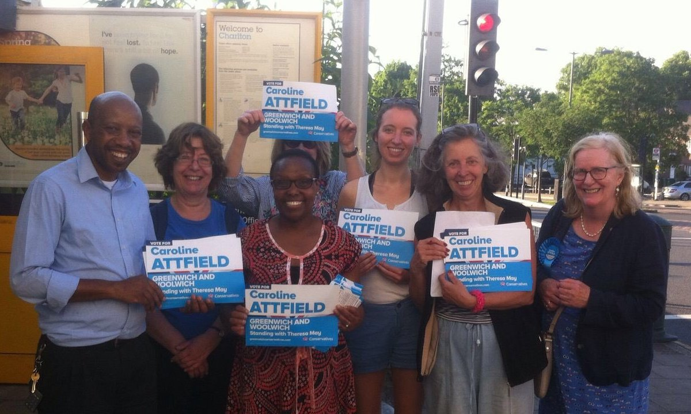

"I have always been a believer in small government and fiscal prudence, but for many years during my city career and raising my family, my involvement in politics was confined to the media and the occasional trip to the polling booth.
With more time and an empty nest, I have become aware of the complete polarisation of political debate and particular into the division of the UK into safe and target areas, often with no demographic distinction.. This has meant that involvement in local politics (unless you live in the approximately 10% of the country in a target or marginal seat) has all but died. Would-be Tory activists in a safe Labour area,are discouraged by the party from campaigning locally in General Elections as a waste of time, instead they are teamed with target constituencies often many miles away. Young and ambitious activists are fine with this, older activists who are more invested in their own area do not.
This has turned huge swathes of Inner city London into Conservative no-go areas with little or no Council representation.
My (at times) one woman mission is to be a campaigning force for my own corner of South East London and over the past few years I have run in 3 Council elections, 1 European election and 1 General Election.
We will not see a return to more balanced democracy until we Compete for Every Seat."
With more time and an empty nest, I have become aware of the complete polarisation of political debate and particular into the division of the UK into safe and target areas, often with no demographic distinction.. This has meant that involvement in local politics (unless you live in the approximately 10% of the country in a target or marginal seat) has all but died. Would-be Tory activists in a safe Labour area,are discouraged by the party from campaigning locally in General Elections as a waste of time, instead they are teamed with target constituencies often many miles away. Young and ambitious activists are fine with this, older activists who are more invested in their own area do not.
This has turned huge swathes of Inner city London into Conservative no-go areas with little or no Council representation.
My (at times) one woman mission is to be a campaigning force for my own corner of South East London and over the past few years I have run in 3 Council elections, 1 European election and 1 General Election.
We will not see a return to more balanced democracy until we Compete for Every Seat."
|

|
I am currently running for Lee Green Council click here to find out why I am running. |